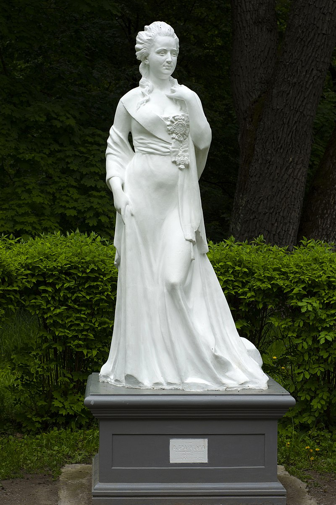

Запрошуємо Вас відвідати перлину Білої Церкви — дендропарк «Олександрія»
Дендрологічний парк «Олександрія» Національної академії наук України розміщено на околиці старовинного міста Біла Церква, поряд з чарівною річкою Рось. Він належить до числа найбільших парків в Україні і має територію 400 га. Парк було створено понад 200 років тому родиною великого землевласника, графа Франциска Ксаверія Браницького, як предмет родинної гордості та магнатської величі.
Незважаючи на складні історичні потрясіння, парк зберіг головні ландшафтні композиції і на сьогодні є унікальною пам’яткою садово-паркового мистецтва кінця XVIII — початку XIX ст. Над його створенням працювали відомі в Європі архітектори та садівники.

Пам'ятник Олександрі Браницькій в денропарку. Відкритий 11 травня 2014 року. Скульптор Максим Василенко